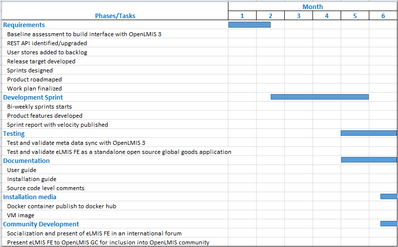

Executive Summary
As logistics management information systems mature at central and regional levels, data collection, aggregation, reporting, and use at the health clinic level becomes the biggest impediment to improved performance management and monitoring. To overcome this impediment, John Snow Inc. (JSI) developed an electronic logistics management information system Facility Edition (eLMIS FE) in Zambia with USAID funding. Currently 500 health facilities in Zambia are using eLMIS FE to automate the day-to-day inventory management and dispensing of health commodities to patients. The Ministry of Health (MoH) plans to roll-out eLMIS FE to the rest of the country over the next few years. In addition, Zanzibar and Swaziland are piloting the use of eLMIS FE in their clinics and several other countries have expressed an interest in learning more about eLMIS FE.
This proposal is to enhance eLMIS FE so that it is available as an open source global public good by documenting its API interfaces, updating the installation instructions, packaging it for download and use, and building an interface with OpenLMIS version 3. When completed, it will be freely downloadable from GitHub for integration into a country’s logistics or health management information system. For countries implementing OpenLMIS version 3, they will be able to easily adopt eLMIS FE for clinic level inventory management and dispensing of commodities. The net result will be that any country in need of an advanced logistics system to manage their commodities will find one freely available for download.
Consortium
JSI
JSI, the prime for this award, is a health care consulting and research organization dedicated to improving the health of underserved individuals and communities around the world. JSI has many years of experience strengthening supply chain systems in lower and middle income countries and implementing health and logistics management information systems. JSI implemented eLMIS 2.0, which is an enhanced and customized version of OpenLMIS 2.0, nationwide in Tanzania, Zambia, Zanzibar, and Cote d’Ivoire. JSI is actively supporting the current users of eLMIS 2.0. JSI developed and implemented eLMIS FE in Zambia and is leading the pilots in Zanzibar and Swaziland. Moreover, through the Family Planning and Logistics Management (FPLM) projects, the Deliver Project, the USAID | DELIVER PROJECT, and the SCMS Project JSI developed many software applications for supply chain management, all of which were made available as “public domain” software. Examples include Supply Chain Manager (SCMgr), the Pakistan vaccine logistics management information system (vLMIS), the Pakistan contraceptive logistics management information system (cLMIS), the Zimbabwe delivery team topping up software (DTTU), PipeLine, the procurement planning and management report software (PPMR), the procurement planning and monitoring report for malaria software (PPMRm), HIV test kit forecasting software (ProQ), and laboratory reagent forecasting software (ForLab).
JSI will manage this work out of its Arlington, VA office and utilize subject matter experts and IT resources in its offices in Zambia and Ethiopia.
Ashraf Islam, JSI’s team leader for software development group, will manage this global goods project. Mr. Islam will be assisted by Wendy Bomett, MIS Director/Zambia, and Chris Opit, IT and M&E Director/Zambia, who will manage the local development/enhancements to eLMIS FE to make it a global good and Elias Muluneh, Sr., a programmer analyst from the Arlington, VA office, who will guide the overall software development efforts. CVs of these key personnel are attached.
JSI will collaborate with the OpenLMIS Community and VillageReach in particular to build out the interface with OpenLMIS version 3. JSI is already working with VillageReach on the OpenLMIS Gap Analysis project that is bringing eLMIS 2.0 features into OpenLMIS version 3. JSI will leverage that on-going partnership to develop the eLMIS FE interface.
VillageReach
VillageReach was established in 2000 to address the challenges of delivering quality healthcare at the last mile to the most underserved communities. VillageReach works with ministries of health to solve healthcare delivery challenges in low-resource environments. In addition, VillageReach serves as the current steward for the OpenLMIS community and for software development of the re-architected OpenLMIS version 3 and subsequent releases. As OpenLMIS steward, VillageReach provides key leadership roles within the OpenLMIS community. VillageReach manages the software development and community coordination by supporting the core community processes and managing the software development across the four development teams.
Josh Zamor, the OpenLMIS Architect, and Mary Jo Kochendorfer, the OpenLMIS Product Manager, will provide guidance and advice on global standards and open source considerations for eLMIS FE. CVs for both are attached.
Project Description
eLMIS FE enables a health clinic to effectively and efficiently manage its inventory of health commodities by recording the receipt of supplies at a bulk store; issues to internal sub stores such as a pharmacy, ward, or lab testing center; and ultimately dispensing to patients through fulfilment of prescriptions, injections, and lab tests. It automates the daily activity registers, bin cards, and other manual paper forms and registers at the facility. It reports on-hand balances and quantities dispensed, tracks lots by expiry and batch, and records physical inventories and adjustments for losses and transfers. It automatically submits daily on-hand balances to the eLMIS central edition to enable national visibility. At the end of the month, eLMIS FE automatically produces a monthly report and requisition (R&R) that the facility in-charge reviews, approves, and electronically submits to the eLMIS central edition (CE). eLMIS FE runs over a local area network (LAN) at the facility so that multiple PCs or tablets running in store rooms and dispensing points can connect to a single database. This provides true offline capability to the health clinic since internet connectivity is only needed for a few minutes each day to submit the daily stock status report to the central eLMIS and for a few minutes at the end of the month to sync the eLMIS FE metadata with the central eLMIS metadata and to submit the R&R containing the requisition for the next period.
eLMIS FE is entirely designed, developed and supported by Africa-based programmers, business analysts, subject matter experts, and project managers. The team developed every user story with clinic users involved. eLMIS FE started locally and is now ready to share its success globally, as a global good.
Problem Statement
Currently, the eLMIS FE implemented in Zambia, Swaziland, and Zanzibar is not packaged in a way that makes it easily accessible to those who want to use it and it only interfaces with eLMIS CE. eLMIS CE is based on earlier version of OpenLMIS (version 2) which has been rearchitected to OpenLMIS version 3.
eLMIS FE syncs with eLMIS CE to retrieve all of its metadata. This ensures seamless electronic “Requisition” submission by each health facility to the central eLMIS and allows an integrated requisition workflow across levels-- authorization, review, approval, conversion to an actual order, and submission of that order electronically to a warehouse management system (WMS) for actual pick/pack/delivery operations.
This seamless workflow is possible because of metadata sync between CE, FE and WMS, that ensures, for example, that the same product code is used by CE, FE and the WMS. The same applies for all other metadata as well with CE being the system of record and FE syncing with it.
With OpenLMIS rolling out a new version, countries who are using FE will want to be able to sync with that version and be able to submit “requisitions” to OpenLMIS version 3 and countries contemplating OpenLMIS version 3 may want to be able to take advantage of FE’s facility-level capabilities. Currently, an interface between FE and OpenLMIS version 3 is not on the roadmap of either eLMIS FE or OpenLMIS version 3.
Technical Approach
To address the problem identified above and turn eLMIS FE into a more easily accessible global good, we will undertake five related activities.
1. Upgrade eLMIS Facility Edition to align with global standards
JSI will upgrade eLMIS FE so that it can electronically sync with OpenLMIS version 3 and maintain a parent/child relationship between these two applications allowing it to bring all master data electronically from OpenLMIS version 3 to eLMIS FE. OpenLMIS is adopting various global standards in version 3. Specifically, for health facility codes, it will interface with a fast healthcare interoperability resource (FHIR)-compliant facility registry. For product master, it will maintain a GS1-compliant product model leveraging global trade identification numbers (GTINs) and classification systems. It will also adopt an OpenHIE-compliant interoperability framework. As part of the OpenLMIS version 3 sync upgrade, we will upgrade eLMIS FE’s data model to ensure that it meets these global standards as well. This will facilitate future interoperability with other non-OpenLMIS version 3 systems that use these standards.
Josh Zamor, the architect, and Mary Jo, the OpenLMIS product manager, will advise JSI on upgrading and aligning eLMIS FE to global standards.
2. Build an interface with OpenLMIS version 3
OpenLMIS version 3 has a different database structure than eLMIS. In conjunction with activity 1, JSI will update the eLMIS FE database, REST API interfaces and coding schemes so that they can synchronize with OpenLMIS version 3. We anticipate some database level changes to leverage the upgraded product model (e.g., the concept of an orderable product was introduced in OpenLMIS version 3 to be GS1 compliant).
3. Update the documentation
JSI will update the eLMIS Facility Edition User Guide, Technical Guide and Installation Guide based on the changes outlined above while making them more generic so that more countries can use them. Guides will be available in English in native Microsoft Word format and included on the documentation directory of the GitHub repository.
4. Adopt an OSI compliant open source license
eLMIS Facility edition will revisit its current Open Source Initiative (OSI) compliant license Mozilla MPL V2 licensing to adopt more community friendly one.
5. Post the source code in GitHub
Complete source code and documentation will be posted and maintained in a publicly accessible GitHub repository. Currently the source code is publicly accessible from this link https://bitbucket.org/elmis-tzm/elmis-sdp-server. The source code will be maintained in GitHub so that any future changes are also publicly available. Any other country or project with their own local developer would be able to download the source code and documentation, and use them for their own implementation. We will also develop and publish guidelines for code contribution in the repository.
To accomplish these activities, JSI will finalize a detailed set of requirements; build a detailed project plan for development, testing, and release of the new version; allocate resources against the tasks in the plan from our Zambia, Ethiopia, and Arlington offices, and execute that plan. We will monitor progress against the completed plan based on the milestones in the plan.
Use of Digital Health Technologies
Work plan and schedule
Requirement Finalization
We will conduct an assessment to identify gaps between the current versions of eLMIS FE, eLMIS CE, and OpenLMIS version 3 and to determine how we will use the REST APIs of OpenLMIS version 3 for syncing. In addition, to meet the global good requirements, we will determine what is needed to produce a full set of documentation and a self-service standalone installer, setup a forum for community support, and develop a product roadmap with community input. For each requirement, JSI will write user stories and put them into the product backlog.
Work plan finalization
The tentative work plan developed as part of this proposal will be updated based on the requirement finalization activity and will include a prioritized backlog with release targets.
Sprint for software enhancements
JSI will use a sprint-based agile software development methodology to upgrade eLMIS FE.
Testing
JSI will test the eLMIS FE to validate that it is able to sync with OpenLMIS version 3 for metadata sync and test and verify that eLMIS FE is downloadable and installable as an open source application.
Documentation update
Currently eLMIS FE has a set of country/implementation specific user guides and installation guides. As part of this activity, JSI will upgrade the documentation to create a fully documented self-service application. Initial documentation will be published in English in Word format so that text can be readily translated into other languages.
Source code
The current publicly accessible source code repository will be moved from bitbucket to the more popular GitHub. The source code will contain comments, license, and installation/build instructions.
Dockerized containers
eLMIS FE will be dockerized and hosted in a docker hub. For easy stack deployment, docker compose and docker stack will be supported with related documentation.
Virtual Machine (VM) image
A virtual machine image will be published so an instance of eLMIS FE can be easily downloaded and powered up in a virtual machine.
Socialization and Community development
At the end of the project a local champion from one of the current implementing countries will present eLMIS FE as a global good in at least one international forum. The presenter will include information on support resources, a community forum, and a support mechanism in the presentation. JSI will engage with the OpenLMIS product and technical committees to present and discuss the interface work being done to allow eLMIS FE to synchronize with OpenLMIS version 3 and to share the product roadmap for eLMIS FE to promote complementary development efforts. In coordination with the OpenLMIS community manager, the eLMIS FE community and support mechanism will be presented to the OpenLMIS governance committee and we will ask if and how eLMIS FE can be referenced as a compatible product by the OpenLMIS community.
Project Deliverables
- Upgraded eLMIS FE with FHIR-compliant facility registry, a GS1-compliant product model, and OpenHIE compliant interfaces
- Updated documentation
- OSI compliant open source license
- Complete source code publicly available from GitHub
- Docker container
- VM image
- Presentation in international forum
- Forum and resources for the community
Digital Health Atlas
eLMIS FE is at Digital Health Atlas at this link (https://digitalhealthatlas.org/app/163/edit-project/publish/)
Timeline
JSI expects to complete this project within 6 months of kick-off.
- Requirements finalized- by 1st month
- Work plan finalized- by 1st month
- Sprints for software upgrade begins- by 6th week
- Software upgrade completes- by 5th month
- Documentation completes- by 6th month
- GitHub distribution downloadable as a global good- by 6th month
- Dockerized container, virtual machine image- by 6th month
- Socialization and community development- by 6th month

Two Sentence Overview of eLMIS FE
eLMIS FE is a locally hosted web-based application that allows you to set up an ordering, inventory management and dispensing system for your hospitals and clinics. It can manage your inventory with batch level tracking, from initial receiving at bulk store until it is dispensed to your clients, and integrates with OpenLMIS to provide you with end-to-end supply chain visibility and order management. In Zambia eLMIS FE interfaces with the SmartCare Electronic Medical Record (EMR) system and similar interfaces with other EMR system can be supported through the built-in application programming interfaces (API) or with minor customizations.
Local support and community support
JSI used local business analyst/programming resources from Zambia and Ethiopia to develop the eLMIS FE. In new countries—Swaziland and Zanzibar (Tanzania) – the team identified and trained oriented programmers/business analysts and connected them with Zambia- and Ethiopia-based programmers for community support. As part of upgrading eLMIS FE into a global good, JSI will seek a more defined connection between the OpenLMIS community and eLMIS FE.
Funding and sustainability
To date, USAID; the Global Fund to Fight AIDS, Tuberculosis, and Malaria; and individual country MoHs have provided funding for the development, training, and roll-out of eLMIS FE. In Zanzibar and Swaziland, the local MoH has taken responsibility for training and roll-out beyond the pilot implementations, as well as planning for country-specific enhancements using their own local programming resources.
Community feedback
We have incorporated feedback received during the proposal finalization phase. Once the project is awarded, we’ll publish a Google Group and Slack channel that people can subscribe to receive updates and provide comments. Over the course of the project we will develop a more formal plan for a community forum and community support.
Use cases
To be compiled and summarized in the future phases
Self assessment
Global Good Maturity Model self-assessment attached.
Expected Outcome
The purpose of this project is to turn eLMIS Facility Edition into a more easily accessible global good. As such the outcomes of the project will be a publicly available, standards-compliant version of eLMIS FE that is accessible and can be used by anyone interested in using it and that contains a prebuilt interface with OpenLMIS 3. For long term sustainability and support, we anticipate a community of practice and alignment with the OpenLMIS community.
Success factors
JSI will apply following factors to measure success for this project:
- Medium rating on maturity model assessment tool
- Over 25% funding through MOH resources
- Over 75% programming support through local talents
- A ready to use open source application with essential documentation
Tags
#Supply Chain
#Inventory Management
#Report and Requisition (R&R)
#Open Source
#OpenLMIS
#Interoperability
#OpenHIE
#GS1
#FHIR
#Offline